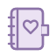

YIKE / CARD ICON LIBRARY
给每一种记忆，一个符号。
灵感、摘录、生活、工作、私密。统一的圆润轮廓，轻柔的双色材质。
20 枚原创图标
SVG · 透明背景
64 × 64 统一画布
灵感
04 ICONS
灵光一现
想法、创意、突然想到的点子
16 / 24 / 32
灵感火花
脑暴、突破、新的方向
16 / 24 / 32
奇妙发现
新发现、值得尝试的事
16 / 24 / 32
想法萌芽
待发展的小想法、长期创作
16 / 24 / 32
摘录
04 ICONS
金句摘录
引用、金句、对话片段
16 / 24 / 32
阅读笔记
读书摘录、学习笔记
16 / 24 / 32
收藏片段
文章收藏、想回看的内容
16 / 24 / 32
重点标记
关键段落、重要信息
16 / 24 / 32
生活
04 ICONS
日常小事
吃喝、日常、轻松时刻
16 / 24 / 32
家的记忆
家庭、居家、亲友
16 / 24 / 32
自然与健康
散步、健康、植物、户外
16 / 24 / 32
美好一天
心情、旅行、值得纪念的日子
16 / 24 / 32
工作
04 ICONS
工作事项
项目、业务、工作备忘
16 / 24 / 32
待办清单
任务、行动项、检查记录
16 / 24 / 32
日程安排
会议、预约、截止日期
16 / 24 / 32
目标计划
目标、里程碑、推进方向
16 / 24 / 32
私密
04 ICONS
私密记事
只想留给自己的记录
16 / 24 / 32
重要凭记
个人线索、重要的私密提示
16 / 24 / 32
隐私保护
边界、安全、隐私相关提醒
16 / 24 / 32

内心日记
心事、情绪、个人日记
16 / 24 / 32